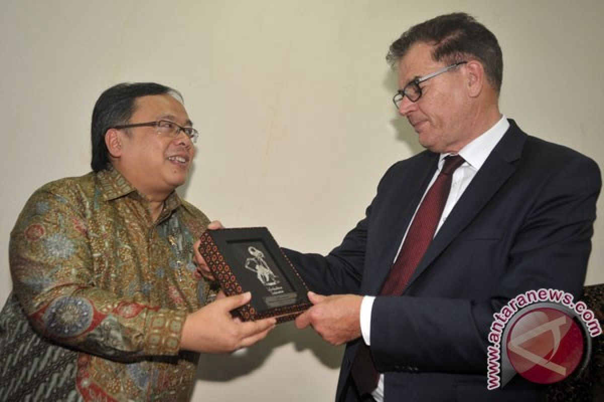
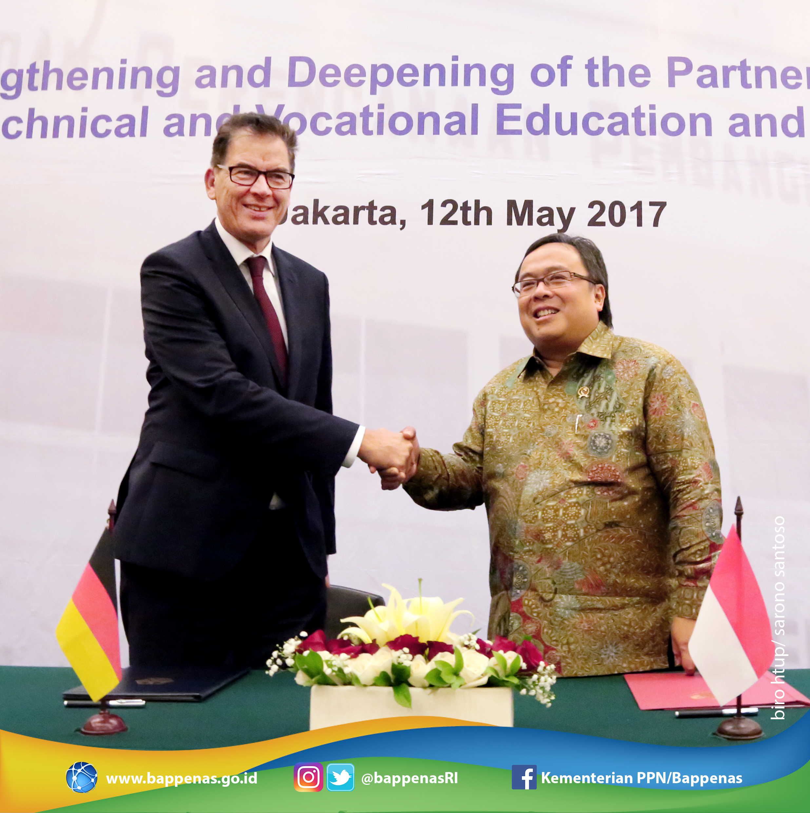
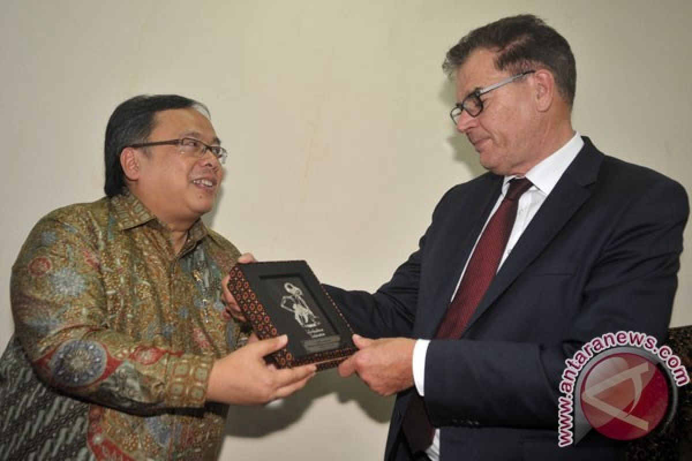
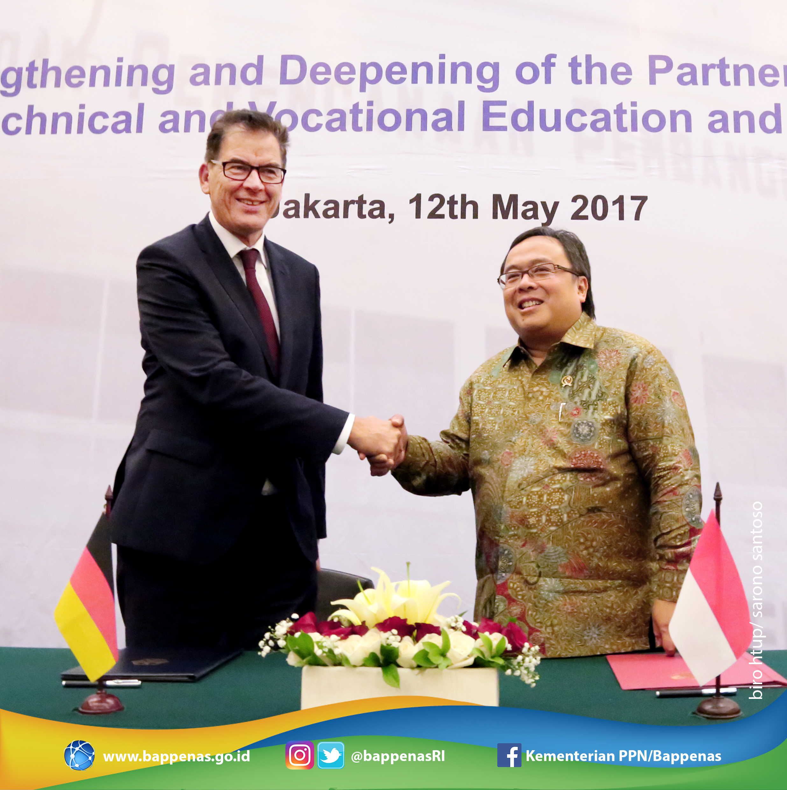

KERJA SAMA BILATERAL SDGS 4 INDONESIA & JERMAN
Kerja sama bilateral adalah hubungan kerjasama yang dilakukan antar dua negara yang memiliki tujuan tertentu. Mereka juga dapat melakukan kerja sama ini dengan persetujuan, kesepakatan, dan perjanjian dalam suatu bidang/sektor. Contohnya adalah dalam perdagangan, pertukaran pelajar, bantuan teknis, militer, dan lain-lainnya. Umumnya, kerja sama ini memiliki tujuan selain dari mencapai tujuan tertentu adalah membangun hubungan yang lebih erat, mencari keuntungan bagi sesama, dan menghindari terjadinya konflik antar dua negara.
Pada kerja sama kali ini, yaitu dalam bidang pendidikan, Indonesia tentunya telah menjalankan kerja sama dengan salah satu negara, seperti Jerman. Mereka pernah menjalin kerja sama ini dengan tujuan untuk meningkatkan kualitas pendidikan yang berada di sekolah vokasi oleh Pemerintah Republik Indonesia, Menteri PPN/Kepala Bappenas Bambang Brodjonegoro dan Pemerintah Federal Jerman, Federal Minister for Economic Cooperation and Development Gerd Müller. Kedua pihak menandatangani Declaration of Intent on Strengthening and Deepening of the Partnership in the Field of Technical and Vocational Education and Training (TVET) di Gedung Utama Kementerian PPN/Bappenas. Jerman merupakan salah satu negara yang memiliki sekolah vokasi efektif dan tertinggi di seluruh dunia, yaitu German Dual System / Dual Approach, sehingga tentunya dapat membantu Indonesia untuk meningkatkan sekolah vokasi pada waktu itu. TVET mencakup enam poin penting, yaitu:
- Dukungan untuk mengembangkan sistem pendidikan serta pelatihan jurusan/vokasi, khususnya juga dari keterlibatan pihak swasta
- Dukungan untuk pendidikan serta pelatihan vokasi bagi meningkatkan kesempatan kerja dan sektor-sektor ekonomi yang unggul dan bagi setiap daerah.
- Dukungan untuk menguatkan sistem pendidikan vokasi lebih lanjut dari pendidikan menengah ke jenjang perguruan yang tinggi
- Dukungan untuk menguatkan kualitas bagi pembelajaran, pendidikan, derta penguji melewati pelatihan di setiap industri.
- Dukungan untuk membangkitkan kerja sama yang lebih dekat antara satuan pendidikan vokasi dan industri dari Indonesia serta Jerman melalui model penerapan sistem ganda, dimana menggabungkan pembelajaran secara teori dan praktek.
- Dukungan untuk meningkatkan kualitas, standar kompetensi kerja nasional Indonesia, kurikulum vokasi yang melibatkan industri, serta membangun sertifikasi yang dapat menjamin kelulusan kompeten dan siap untuk bekerja.
Oleh sebab itu, pemerintah Indonesia mendorong untuk membangun sekolah vokasi yang banyak lebih lanjut, memprioritaskan kompetensi pendidikan dari guru, perbaikan kurikulum untuk menyesuaikan murid, dan perlengkapan pelatihan yang memadai bagi guru. Dengan harapan bahwa persetujuan ini dapat meningkatkan Sekolah Menengah Jurusan (SMK) atau sekolah vokasi lebih lanjut untuk meraih tenaga kerja yang tinggi dan siap kerja.